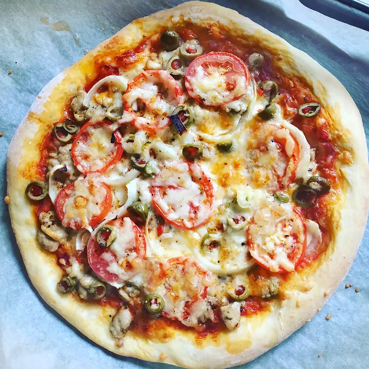

Pizza

Homemade Pizza
Instruction on how to do the Pizza/p>
How to do it!
Pizza Crust Ingredients:
- Yeast: Active dry yeast is a leavening agent, which means it's the ingredient that causes the pizza dough to rise.
- Sugar: To activate your yeast, you'll need to dissolve it in warm water with a teaspoon of sugar. The sugar gives the yeast something to eat and speeds up the activation process. You'll know your yeast is active when it becomes bubbly and frothy on top.
- Bread Flour: Bread flour is ideal for pizza crust becauseit creates chewier results than all-purpose flour. This is because it contains more protein, which helps produce lots of gluten. Gluten is what gives the crust elasticity.
- Olive Oil: Olive oil serves a couple purposes when it comes to pizza crust: Not only does it add color and flavor, but it creates a barrier between the oil and water. This oily barrier prevents sogginess.
- Salt: A little bit of salt goes a long way. Salt adds flavor, strengthens the gluten (creating a chewier crust), and slows down fermentation (resulting in a better rise).
How to Roll Out Pizza Dough
Let the Dough Come to Room Temperature
After you're finished mixing the ingredients, allow your dough to rest on the counter for about 30 minutes. This will allow the gluten to relax, making the dough much easier to stretch and shape. Cold dough is much more difficult to work with.
Prepare Your Surface With Oil
You might feel inclined to prep your workspace with a big handful of flour to prevent sticking. This is a helpful step with many kinds of dough. However, in this case, too much flour can make your pizza crust tough. Instead, rub your surface (and your hands) with a few tablespoons of olive oil and maybe a little bit of flour. This will prevent sticking, encourage a crispy texture, and ensure a gorgeous golden color.
Shape the Dough
You have a few options when it comes to shaping the dough. Stretch it in the air, use a rolling pin, or pat it with your hands. No matter which method you choose, make sure not to overwork the dough. Working it too much will create a tough texture. When you're done, you should have an even circle that's about 10 to 12 inches wide and about ⅓-inch thick. If you get too thin, the crust may not be able to support the sauce and toppings.
Ingredients:
- 1 cup warm water (110 degrees F/45 degrees C)
- 1 (.25 ounce) package active dry yeast
- 1 teaspoon white sugar
- 2 ½ cups bread flour
- 2 tablespoons olive oil
- 1 teaspoon salt
Step-By-Step:
- Preheat oven to 450 degrees F (230 degrees C). Lightly grease a pizza pan.
- Place warm water in a bowl; add yeast and sugar. Mix and let stand until creamy, about 10 minutes.
- Add flour, oil, and salt to the yeast mixture; beat until smooth. You can do this by hand or use a stand mixer fitted with a dough hook to make it easier. Let rest for 5 minutes.
- Turn dough out onto a lightly floured surface and pat or roll into a 12-inch circle. Transfer to the prepared pizza pan.
- Spread crust with sauce and toppings of your choice.
- Bake in the preheated oven until golden brown, 15 to 20 minutes. Remove from the oven and let cool for 5 minutes before serving.